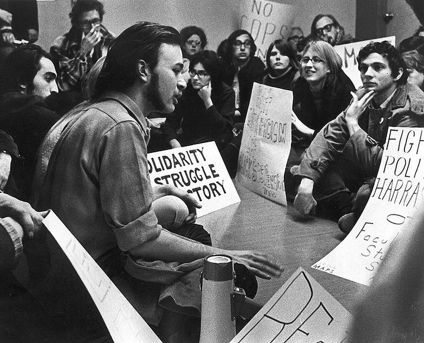
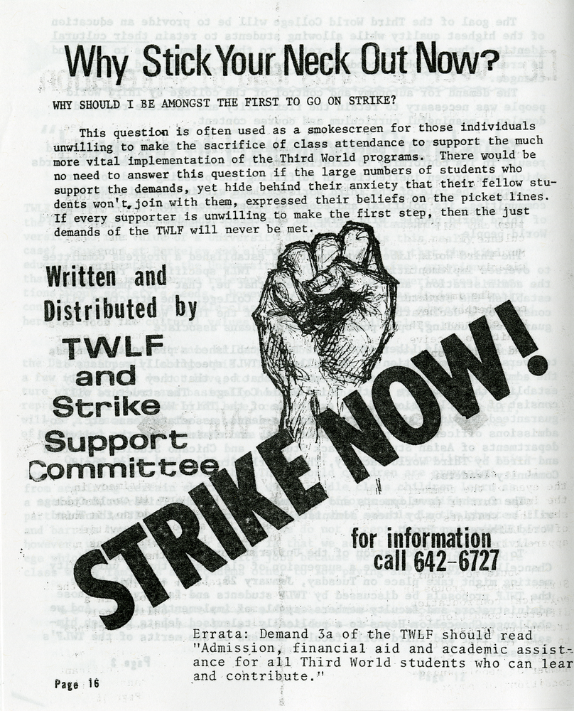
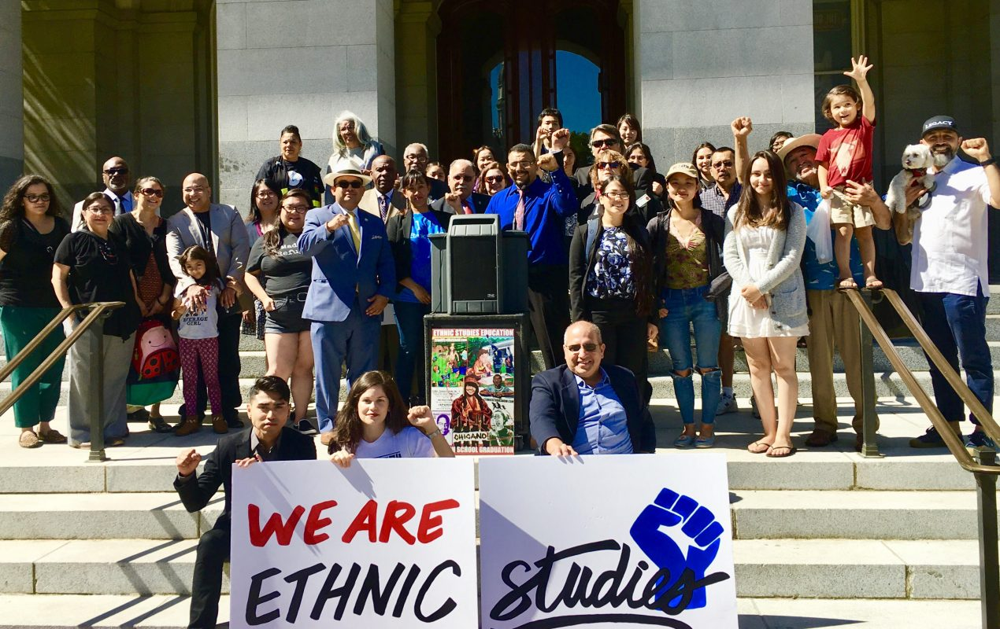
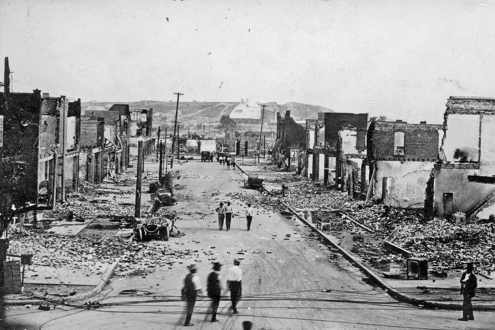
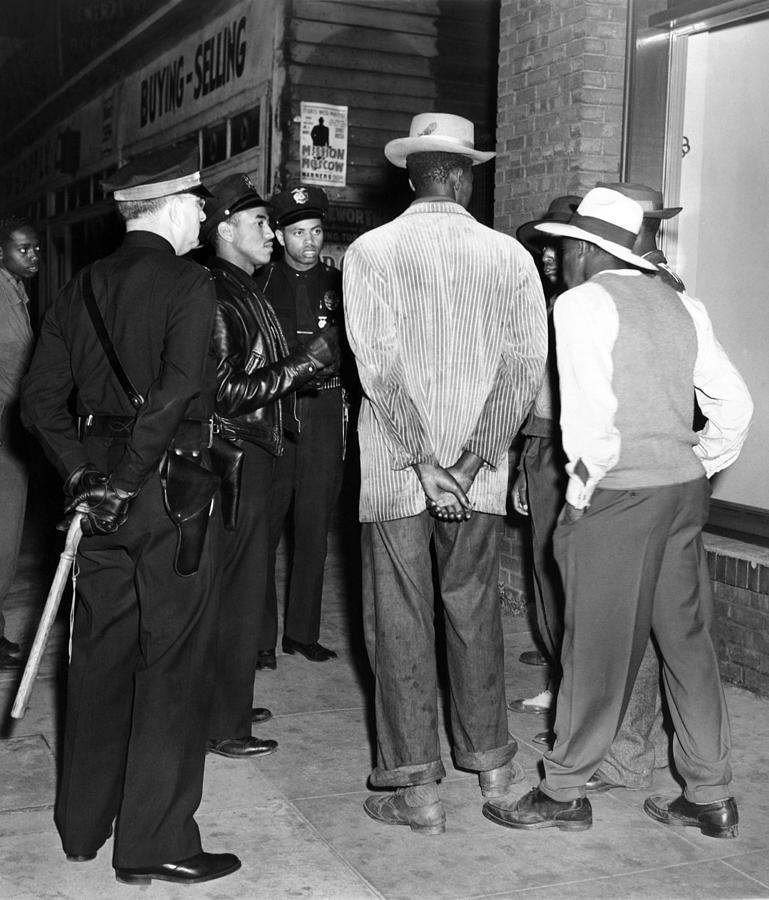
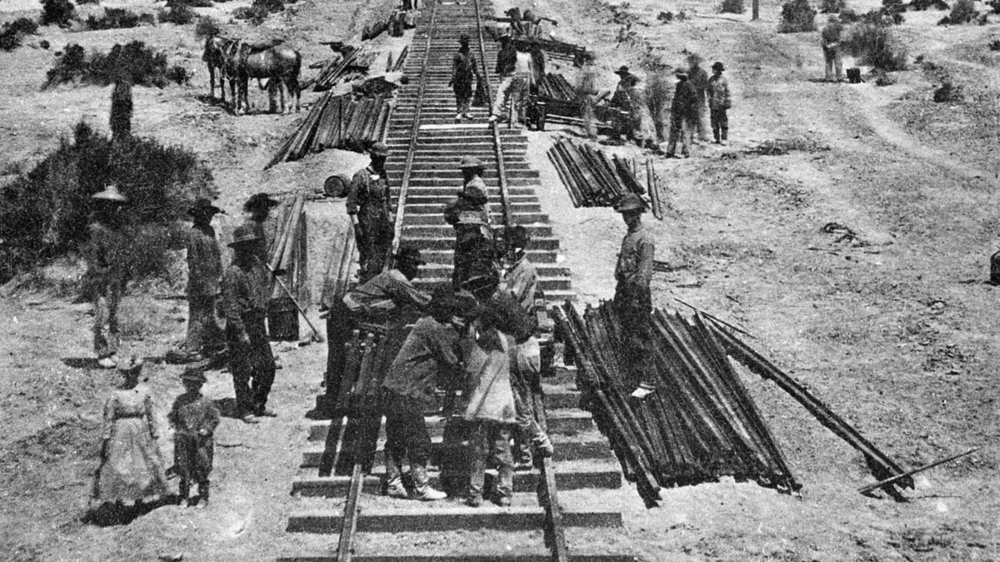
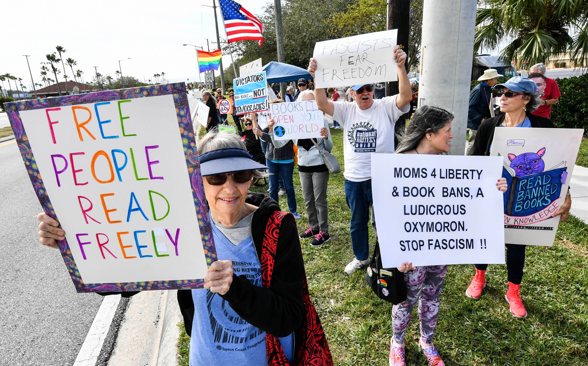

In 1968, a group of students at San Francisco State College looked at their textbooks and noticed something. Thousands of people had helped build California. Farmworkers, railroad laborers, Indigenous peoples, and enslaved men and women had all shaped the state. But none of them appeared in the books students were required to read. The students had a word for what they saw: erasureWhen the history, culture, or experiences of a group of people are deliberately left out or ignored, as if they never existed.. And they decided to do something about it.
The Textbook Problem
Every history textbook is a set of choices. Someone decided which events were important enough to include. Someone decided which people were worth naming. For most of American history, those choices were made by a very small group of people: mostly white, mostly male, and mostly from the eastern United States.
That meant large parts of the American story got cut out. The Chinese workers who built the transcontinental railroad were not in the chapters about the railroad. The Black soldiers who fought in every American war were rarely given more than a sentence. The Native nations who negotiated treaties with the U.S. government were described as obstacles or footnotes, not as sovereign peoples with their own governments and laws.
This was not always an accident. Some of these choices were intentional. School boards and publishers made decisions about what version of America students should believe in. A textbook that celebrated conquest looked very different from one that asked questions about it. The narrativeThe story that gets told about a group of people or a historical event, and who has the power to decide what that story says. that got chosen shaped how generations of Americans understood their country.
When a group of people does not see themselves in the story they are taught, it sends a message. It says: your history does not count here. That message has real consequences. It affects how students see themselves and how they see each other. And it leaves everyone with an incomplete picture of how this country actually came to be.
"One ever feels his twoness: an American, a Negro; two souls, two thoughts, two unreconciled strivings."
W.E.B. Du Bois, The Souls of Black Folk, 1903.
Du Bois was one of the first Black scholars to write about what it felt like to live in a country that refused to include you in its own story. He called this feeling of being split between two worlds "double consciousness," and it is still something many students of color describe today.
Question 1: What do you think Du Bois meant by "two unreconciled strivings"? What two things might be pulling in opposite directions?
Question 2: How does this connect to the essential question: what happens when whole communities are left out of the story?
The Strike That Changed Schools

In November 1968, students at San Francisco State College walked off campus and refused to return. They were not striking over tuition or cafeteria food. They were striking because their college had no courses, no departments, and no faculty dedicated to the history and culture of communities of color. They wanted that to change.
The students formed a group called the Third World Liberation Front. That name was a deliberate choice. Around the world in the 1960s, colonized peoples were fighting for independence. These students connected their struggle in the classroom to a global struggle against systems that pushed certain communities to the margins. They saw the university as one of those systems.
The strike lasted 134 days. It is still the longest student strike in American history. Police were called to campus repeatedly. Students were arrested. The college president resigned. But the students did not stop.

The Third World Liberation Front had fifteen specific demands. The central ones were clear: create a School of Ethnic StudiesThe academic study of the histories, cultures, and experiences of communities whose stories have been left out of mainstream education., hire faculty from those communities, and create courses that reflected the real history of all Americans, not just some.
In 1969, after 134 days, the college agreed. San Francisco State became the first university in the country to create a College of Ethnic Studies. That school still exists today. The students who went on strike in 1968 did not just change one college. They changed what American education was allowed to look like.
Their demand was simple at its heart: if this is our country too, then our history belongs in this classroom. That argument took 134 days of walking picket lines in the cold to make stick. But it stuck.
"We are a coalition of Third World students united to end racism in our educational system."
Third World Liberation Front, Strike Demands Statement, San Francisco State College, November 1968.
These students were not asking for a favor. They were making an argument that had been ignored for generations: that a school system that erases certain communities is not educating everyone equally.
Question 1: The students used the word "racism" to describe what was happening in their schools. Based on what you have read so far, do you think that word fits? Why or why not?
Question 2: The students were asking for representationWhether a group of people is accurately included in media, textbooks, schools, or public life, and how they are shown when they are included. in their own education. How does that connect to the essential question of what gets left out and why?
How California Finally Acted

The students at San Francisco State won something big in 1969. But what they won applied to one university. The fight to bring ethnic studies into every high school in California took another fifty years.
In 2021, Governor Gavin Newsom signed a law making ethnic studies a graduation requirement for all California high school students. California became the first state in the country to require it. The law takes full effect for the class of 2030. You are one of the first groups of students to experience this requirement.
Why did it take fifty years? The short answer is that powerful people disagreed about what American history should say. Some argued that adding ethnic studies would divide students instead of unite them. Others argued that leaving out the history of millions of Americans had already done that, and that students deserved the full story. That argument went back and forth in school boards, legislatures, and community meetings across the state for decades.
What finally moved it forward was organizing: students, teachers, parents, and community groups who kept pushing, kept showing up, and kept making the same argument the San Francisco State students made in 1968. The course you are sitting in right now is the result of that work.
🏠 San Diego Connection: The Fight Came Here Too
San Diego Unified School District began piloting ethnic studies courses years before the state law passed. Community members and students here pushed for curriculum that reflected the region's history: the Kumeyaay Nation's deep roots, the Mexican American families whose ancestors lived here before the U.S.-Mexico border was drawn, and the Filipino and Black communities who shaped this city's labor and military history.
The Kumeyaay Cultural Repatriation Committee has been working for decades to recover cultural items taken from their community and held in university collections. That fight over what belongs to whom, and who gets to tell the story, is the same fight this course is about.
Five Stories You Were Never Told
Across this course, you will encounter stories that almost never appear in a standard American history class. Here are five of them. You do not need to know the full story yet. Just notice: did you already know this happened? And if not, why not?
A counternarrativeA story that challenges or corrects the official version of history by including voices and events that were left out. is exactly what it sounds like: a story that pushes back against the version of history that has been handed down as the official one. The events below are all real. All of them were left out of most textbooks for most of the 20th century.


The Tulsa Race Massacre (1921)
In June 1921, a white mob burned down a thriving Black neighborhood in Tulsa, Oklahoma called Greenwood. Over 300 Black Americans were killed and 10,000 were left homeless overnight. It was one of the worst acts of racial violence in U.S. history. It was not taught in Oklahoma schools until 2020.
The Zoot Suit Riots (1943)
In Los Angeles in 1943, U.S. servicemen attacked young Mexican American and Black men wearing zoot suits, a popular style of clothing. Police arrested the victims, not the attackers. Local newspapers cheered the violence on. The riots were a flashpoint in the history of anti-Mexican racism in California.
The Chinese Exclusion Act (1882)
In 1882, the U.S. Congress passed a law banning Chinese laborers from entering the country. It was the first and only law in American history to exclude an entire ethnic group by name. It was not fully repealed until 1943. The workers who had helped build the transcontinental railroad were now legally barred from the country that railroad connected.
The Bracero Program (1942–1964)
During and after World War II, the U.S. government brought over 4 million Mexican workers to the U.S. under temporary contracts to work on farms. Many were cheated out of wages that were promised to them. When the work was done, the workers were deported. Their labor fed the country. Their names did not make it into the textbooks.
The Trail of Broken Treaties (1972)
In 1972, a coalition of Native American organizations drove a caravan of cars across the country to Washington, D.C. They presented the U.S. government with a list of twenty demands for honoring the treaties that had been signed and broken for over 150 years. The government refused to meet with them. The protest received almost no coverage in major newspapers. Most Americans still do not know it happened.

These five stories are not rare exceptions. They are examples of a pattern. When a country writes a history of itself, it is also making choices about what that country stands for. Leaving out the Tulsa Massacre or the Chinese Exclusion Act does not make those events less real. It just means students grow up without knowing they happened. This course is about changing that.
How This Still Matters Today
The argument over what gets taught in American history classrooms is one of the most contested fights in education right now.
Across the country, states are passing laws about what teachers can and cannot say about race and history. Some states have banned books that include the history of communities of color. Others, like California, are moving in the opposite direction. The question at the center of all of it is the same one the San Francisco State students asked in 1968: whose history belongs in this classroom?
The Tulsa Race Massacre was left out of Oklahoma textbooks for nearly 100 years. It took a 2021 state law and a TV show to bring it to wide public attention. The families of survivors are still waiting for official recognition and reparations. The story was always there. It was just not being told.
- California Makes Ethnic Studies a Graduation Requirement
- Tulsa Race Massacre: Survivors and Families Seek Reparations
- Book Bans and History Curriculum: The Fight Over What Students Learn

If a history gets erased long enough, does it become harder to fix the harm that history caused? What do we owe to stories that were deliberately left out?